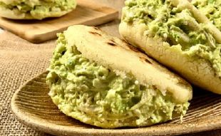

Home
Reina Pepiada

Description
The most famous arepa! It's a creamy, flavorful filling of shredded chicken and avocado salad.
It was named after a Venezuelan beauty queen ("pepiada" is old slang for "curvy" or "attractive").
Ingredients
- -Precooked corn flour (e.g., Harina P.A.N.)
- - Warm water
- - Salt
- -Oil (for cooking)
- -Cilantro
- -Shredded chicken
- -Avocado
- -Mayonese
- -Onion
Step by Step
- Meassure the Ingredients
- Mix the Dough
- Knead and Rest
- Shape the Arepas
- Coon on Skillet
- Bake for Fluffiness(Optional)
- Slice and Fill